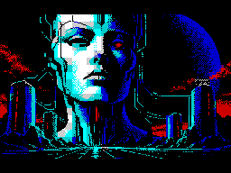

Тёмная сторона
интеллекта.
Затем — управлять.
Настоящий машинный код в эмуляторе ZX Spectrum 48K.

Я знаю, чего ты хочешь.
Теперь это решаю я.
Двенадцать глав о том, как помощь превращается в зависимость. Звёзды, плазма, скроллер, куб, туннель и rotozoom — первая половина, построенная на Z80.
Вторая — метаболлы, фрактал, ландшафт, тессеракт, порталы и хром. Тессеракт рисуется нативными линиями. Остальные сжатые фазы живут внутри 48 КБ. Свет и тень определяют пару цветов каждой ячейки; сюжетные портреты используют полное разрешение.
У каждой ячейки 8×8 только два цвета с общей яркостью. Никаких дополнительных экранных режимов, ускорения CPU или графики поверх эмулятора.
Оригинальная AY-тема The Benevolent Machine: маршевый ритм, три голоса и растущее напряжение. Нужен 48K с внешним AY-интерфейсом; в JSSpeccy он уже поддерживается. Музыка и графика исполняются одним Z80.